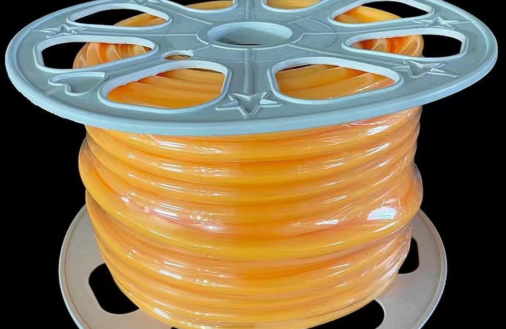
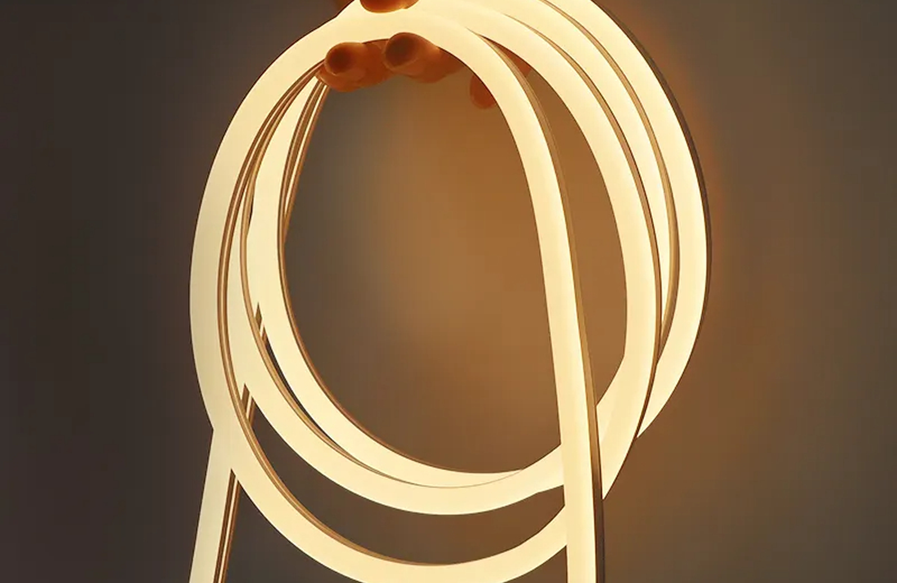
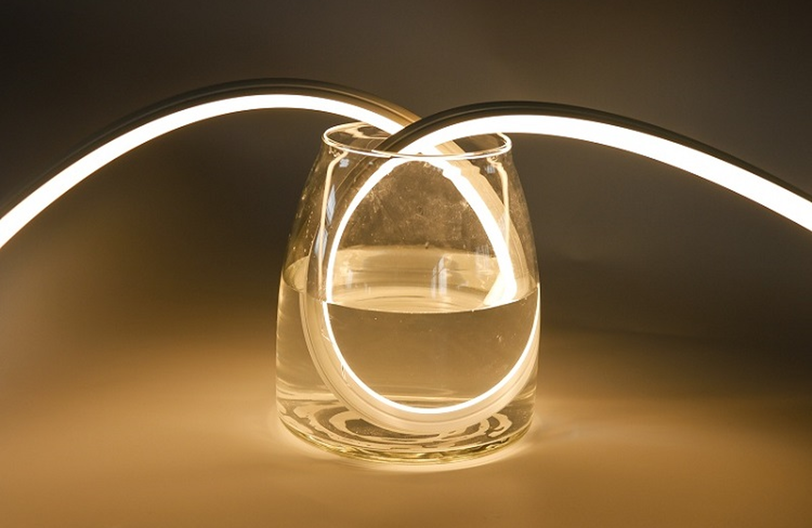
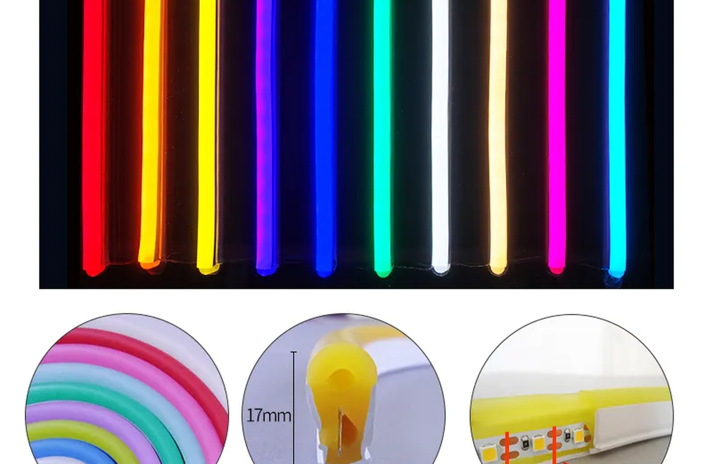
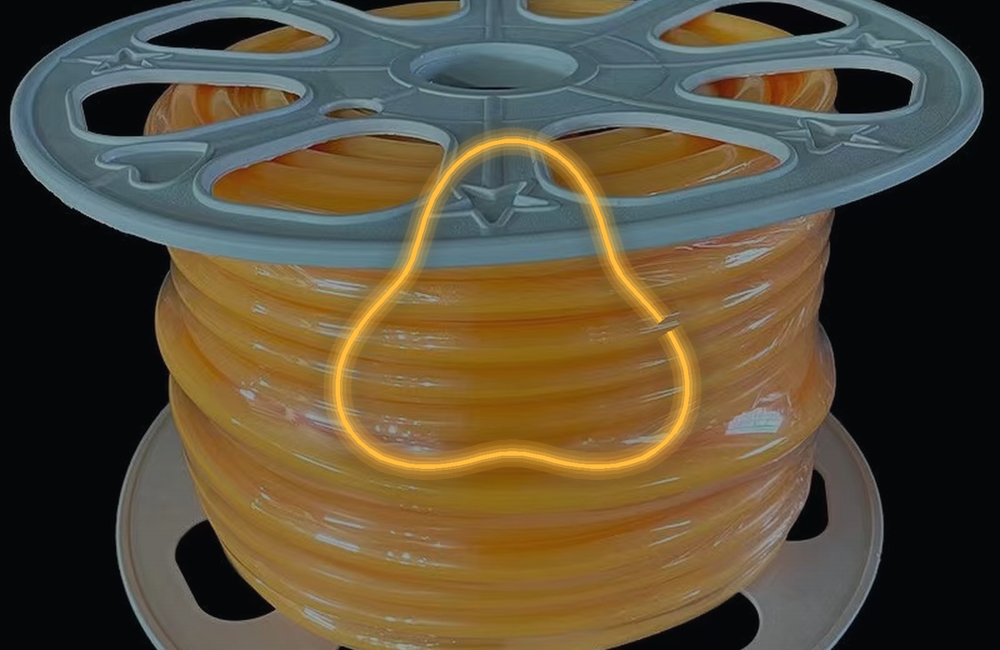

Neon flexível para contorno
Indicado para linhas visíveis em móveis, painéis, fachadas e elementos arquitetônicos.
contornocurvasdifuso
Consultar especificação

Neon Flex • curva e contorno
Fita LED Neon flexível para projetos que precisam seguir curvas, contornos, letras, nichos e linhas visíveis de arquitetura. Para B2B, o ponto central é confirmar raio de curvatura, direção de dobra, corte, alimentação e acessórios antes de produzir ou instalar em lote.
Mapa técnico
Referência estrutural: páginas de categoria da Flexfire com filtros por tipo, uso e especificação. Adaptação: linguagem de projeto, cotação, lote e documentação técnica para clientes B2B no Brasil.
Modelos e aplicações
Cluster principal: fita led neon flexível. Termos de apoio: fita de led neon flexivel, neon flexível led, fita neon flex, fita led neon para contorno.

Indicado para linhas visíveis em móveis, painéis, fachadas e elementos arquitetônicos.

Solução para sinalização, logotipos e comunicação visual com linha luminosa contínua.

Aplicação aparente ou semiaparente quando a luz deve fazer parte do desenho.

Guia B2B
Ao contrário de uma fita LED comum, o Neon Flex tem corpo difuso e direção de dobra. Por isso, o brief técnico deve incluir o desenho do percurso, raio mínimo, orientação da dobra, pontos de corte, tipo de saída do cabo e ambiente de uso. Essa página foi escrita para integradores, distribuidores e projetistas que precisam transformar uma ideia de linha luminosa em item de fornecimento estável.
Aplicações comerciais
As aplicações ajudam o time comercial a qualificar o lead por ambiente, nível de exposição e necessidade de controle.
Logotipos, letras e linhas de marca com luz difusa.
Planejar aplicaçãoContornos em balcão, teto, painel e circulação.
Planejar aplicaçãoTrechos curvos com especificação de raio e acabamento.
Planejar aplicaçãoFAQ técnico
Respostas orientadas para integradores, distribuidores, arquitetos e clientes de projeto.
Sim, mas é preciso respeitar o raio mínimo e a direção de dobra do modelo.
Depende do produto. O corte deve seguir a marcação e precisa de acabamento correto.
Sim, quando o perfil, raio e método de fixação forem compatíveis com o desenho.
Envie desenho, metragem, cor, tensão, ambiente, raio das curvas e necessidade de acessórios.
Cotação B2B
Para retorno técnico, envie metragem, cor, tensão, proteção IP, ambiente de instalação, desenho do percurso e quantidade estimada por lote.